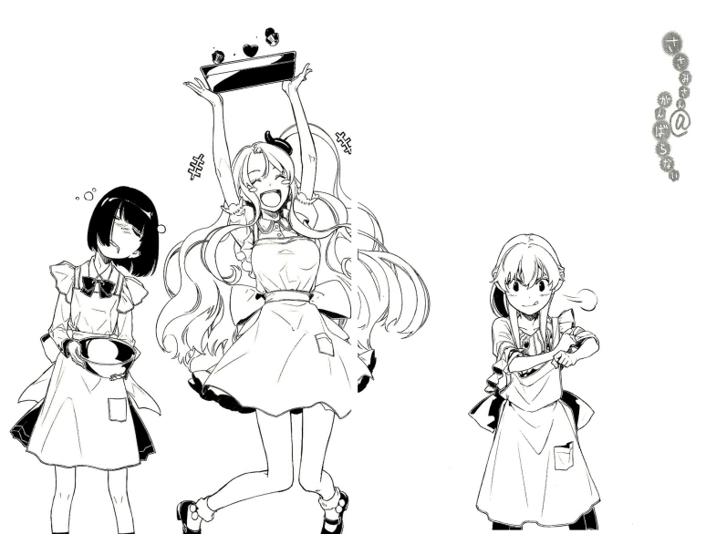

VOLUME 1

Chapter 5: Give Me Chocolate (Front Half)
“Well, Valentine’s Day is…”
Tama was still clinging to Kagami and squeezing her head, but Kagami seemed to have decided to ignore it. She had returned to reading her books, but was also skillfully explaining Valentine’s Day.
“It’s a holiday primarily practiced in Christian nations, and it was originally the holiday dedicated to the Roman goddess Juno.”
“Juno, huh?”
Tsurugi mumbled, as if talking to herself.
“I guess in Greek mythology, Juno would be Hera… a proud and jealous goddess who goes around and kills all her husband’s lovers. But she’s also the goddess of marriage and the family, isn’t she…?”
“But the actual word ‘Valentine’ comes from Saint Valentinus.”
Kagami spoke on as if she was reciting something from a reference book.
“The Roman emperor at that time proclaimed that soldiers falling in love would decrease morale, so he made marriage illegal. But Saint Valentinus pitied these soldiers who had love stripped away from them, and he secretly married them. He was discovered and arrested, and eventually executed. February fourteenth is a holiday where we are meant to lament and pray for Saint Valentinus.”
“Ummm… ummmm…”
Clearly confused at hearing all this difficult talk, Tama muttered as she chewed on Kagami’s hair (she was like an animal…).
“But, umm, Tama’s classmate Nozomi said…”
Seeming somewhat embarrassed, Tama began to pull on Kagami’s cheeks.
“She said that Valentine’s was when… umm… when you c-c-c-confessed to the person you like…”
“Ah, well that’s pretty much what it’s become in Japan.”
Kagami seemed to finally have gotten fed up with getting pushed around, and tried to push Tama’s face away forcibly.
“Fufufufu, so Tama’s already at an age where she’s starting to care about that stuff?!”
Tsurugi seemed way too happy about that and shook her legs up and down (In her complete lack of manners, she had actually gotten on the table and was sitting there cross-legged. Maybe she was completely bored, but she was also playing on a handheld video game console).
“I like it. Valentine’s Day, I mean.”
“After all, maybe except for Christmas, it’s much easier to make ero events happen on Valentine’s Day than any other holiday!”
“Your viewpoint has been completely corrupted.”
Kagami sent Tsurugi a displeased look, but Tsurugi didn’t seem to mind.
“Well, without opportunities like this, people wouldn’t be able to go through the embarrassment of confessing their love. Everyone’s so busy with other things, and most people don’t have the courage to journey into the unknown by confessing. But if kids without much love experience don’t find love even through these special holidays, I’m not sure what they would do.”
“I’m not interested, so I don’t care.”
“Hauuu, hauu…”
Kagami just continued reading her books, while Tama seemed to be overly sensitive to the word “love.”
“And because of all that, when this time rolls around every year, the school starts going a bit crazy and you just can’t calm down. All the other teachers start giving me suggestive glances. You want me to give you chocolate or something? You damn lolicons! If I bought chocolate for all of you, my wallet’s gonna be damn empty! I mean, I’m the only one with any income in my family, and I have two dependents too!”
Ah, right. The two younger Yagami sisters were still students, so Tsurugi was the only one who actually worked.
Maybe she got annoyed, but Tsurugi started kicking my brother while sprawling herself out on the table.
“Tama didn’t know about Valentine’s, so she probably didn’t, but did Kagami pass out chocolates? Whether it’s a duty or not, it’s an easy way to make you more popular with the boys, you know? And you can reap the rewards later. Make them carry heavy things for you and stuff like that…”
“You’re too calculating.”
Kagami’s expression didn’t change a bit.
“Funyaa. When I weigh the time it would take to make chocolates with the benefits I would receive afterwards from the boys, I don’t think it’s worth it. Also, I don’t even have any friends of the same sex, and I stand out from the crowd, so talking to a boy and giving him chocolates would be impossible for me.”
“Come on, try to enjoy youth a bit more, you…”
Tsurugi seemed a bit exasperated, and a bit worried.
“Now that I think about it, I haven’t seen you talking to anyone in school except for me… ah, but how about Tsukuyomi? Did you give him some chocolate? Even though you’re pretty bad when it comes to communicating, you can still talk with Tsukuyomi pretty well, right?”
“Huh?”
Kagami’s voice sounded just a bit more high-pitched.
“I-I don’t know what you could mean. It’s not like I get along that well with sensei. He’s just too clingy. You’re being illogical.”
“You don’t really have to deny it that strongly though…”
Tsurugi seemed at a loss, but she put her hand to her small chest and breathed a sigh of relief.
“I see, so Kagami didn’t pass any out… Tama also obviously didn’t prepare any chocolates… and there’s no way any other girls approached Tsukuyomi to give him chocolates, so… ehehe.”
She seemed happy about that, for some reason.
“Umm, Tsurugi-sensei.”
Baffled as he watched the three sisters talk, my brother nervously raised his hand.
“I’m not too sure what chocolates have to do with confessing, but exactly what kind of event are you saying Valentine’s Day is? Now that you mention it, I could definitely smell chocolate here and there today…”
“… Don’t tell me you don’t know either.”
Tsurugi was dumbfounded.
“Sometimes you’re so poorly informed that it’s really hard to imagine that you’re actually a teacher… were you living under a rock all your life or something?”
“……”
“Well, you know, there’s a certain etiquette when it comes to Valentine’s Day.”
My brother was being silent for once, but Tsurugi didn’t mind him and just continued speaking proudly.
“Fundamentally, it’s a day where girls give boys chocolates. While they’re confessing their love. The smart ones buy a lot, and also pass them out to their female friends as a sign of friendship. Boys also sometimes give girls chocolate too… but in other words, it’s a day where you give the person you love chocolates.”
“Ahh, that’s why Tsurugi-sensei gave me a chocolate cornet, right?”
“Wha-?! No, stop getting the wrong idea, you stinking d*ck! D-Don’t get carried away, I bought you that because everything else was sold out!”
“Well, either way, in the end the chocolate cornet got stolen by the other teachers…”
“Then go and take that love back.”
“But I got a chocolate stick instead, so I’m completely satisfied~~.”
As I watched them talking like that… I felt a wave of relief wash over me from somewhere.
I see. Oniichan didn’t know what Valentine’s Day was.
That’s why he acted like he always did this morning, even though I had gone out of my way to give him his “lunch.”
It wasn’t like he didn’t want something like that or like he hated me… he just didn’t know what it was. And because he had no idea, he gave it to a hungry Tama as a “lunchbox.”
Geez.
“But Tsurugi-sensei, there’s something that’s bothering me then… is today the only day you can give out that chocolate?”
“Eh? Ahh, well today’s Valentine’s Day, after all. It would just feel off to give the chocolates some other day. Why do you ask?”
“B-B-But, Sasami-san hasn’t given me chocolates yet…”
My brother began to tremble.
“That’s… that can’t be… it’s impossible…! Sasami-san isn’t like me… she actually is knowledgeable in matters of the world, so she definitely should know about Valentine’s Day… but even then, she still hasn’t given me any chocolates… and I thought Sasami-san loved me…”
No, I did give you some.
You just didn’t realize it.
“Ah, she’s probably planning on giving me the chocolates at dinner. She’ll wear a maid outfit, her face will be all red, and she’ll go ‘Oniichan, I love you~~!’”
Why the hell would I wear a maid outfit?
And I don’t remember ever saying something like “Oniichan, I love you~~!”
“Well, Sasami-san is a hikikomori, so she wouldn’t be able to go buy chocolate, would she? Ah, I’ve solved it! Sasami-san really wanted to give me chocolates, but she was really frustrated because she couldn’t go out to buy them!”
Oniichan, haven’t you heard of these useful things called “mail orders”?
As I sat there dumbfounded, my brother violently stood up.
“I cannot allow this to happen! I have to go and buy huge amounts of chocolate!”
“Huh? Right now?”
Tsurugi turned completely red.
“D-Don’t be an idiot, Tsukuyomi! The reverse holiday where the guys give the girls gifts is White Day, on March fourteenth! You really don’t have to go out right now and buy chocolate just so you can confess to me…”
“Neesan, sensei never said he was giving the chocolate to you.”
Kagami looked up at my brother as he put on clothes and prepared to go out.
“But sensei… neesan might have said this earlier, but in this country, Valentine’s Day is fundamentally when the girls are the ones giving the boys chocolates. There’s no need for sensei to give anybody any chocolate. Well, it’s not like I wouldn’t accept if you decided to give me some, though…”
“He’s not saying he’s giving any to you either, Kagami.”
Tsurugi and Kagami glared at each other.
Tama stood there watching her sisters with a puzzled expression, but then grabbed onto my brother’s clothes.
“U-Umm, Paparin.”
My brother was taller than Tama, so Tama was looking at them through upturned eyes.
And she was trembling.
“There’s, um, something Tama wants to ask you. This morning, um, Paparin, he gave Tama chawcolates… y-you give chawcolates to the person you l-like, right? So Paparin gave Tama chawcolates because… umm…”
“……?”
Tama spoke very hesitantly, and then nervously asked a question.
“Is it because Paparin… likes Tama?”
Absolutely oblivious when it came to delicate matters like this, my brother just cocked his head to the side in confusion and took her question completely at face value.
“Of course! I love Tama-san!”
Granted, my brother “loved” everyone.
Although, I didn’t know whether his “love” for me was the same kind of love he would have for the opposite sex… well, let’s leave that for now.
“Hwah.”
Tama boiled up,, began to sway from side to side, and hugged Kagami tightly.
“Hwawawawa…”
Squeeze squeeze. Creak creak.
Kagami banged her hand on the table. “Uncle, uncle! Let go!” she yelled, but Tama ignored her and mumbled innocently to my brother.
“Tama does too.”
She was red from ear to ear.
“Tama… loves Paparin.”
“Thank you very much!”
Tsurugi looked from my quite-happy brother, to Tama who was acting pretty out of whack, to Kagami who was banging on death’s door, and she narrowed her eyes in suspicion.
“Hey, Tama, what’s the meaning of this? I want to know how you two seem to be suddenly getting along so well. Why don’t you tell your oneechan the details? I promise I won’t get mad.”
“Okay, um, Tsurugi-nee!”
Tama returned to her usual innocent self, and raised both her arms in the air happily.
“This morning, Tama got chawcolates from Paparin!”
“What?!?!”
Tsurugi leapt up like a cat, grabbed at my brother face, and began to aggressively dishevel his hair. She seemed almost like a demon.
“You asshole, don’t go and just casually raise flags (1) with my little sister! You gave Tama chocolates?! What happened to all those events with me you’ve been accumulating with me?! You and your ‘I won’t choose anyone. I love everyone!’ attitude… you must be going for a harem end, aren’t you?!”
“Eh?! That can’t be! I’ve been going straight on the Sasami Route my entire life!”
“You idiot! If you go on the route of your real sister in real life, you’re heading right for a bad end where you get arrested!”
… Stop putting everything in terms of eroge please.
Tsurugi stayed clinging to my brother, but skillfully turned to look at Tama and thrust a finger at her.
“You’re going down an evil path if you let boys give you chocolates! But also, Tama, he gave you chocolates this morning, right? That’s before he actually knew about Valentine’s Day! So there wasn’t any hidden meaning to the chocolates he gave you! Don’t be tricked like that!”
“A-Alright…”
Tama seemed bewildered, but she soon gave off an innocent smile.
“But still, Tama was really happy.”
@@@@@@
So even someone like my brother can get wrapped up in a love-comedy-esque situation like that…
But anyways…
“Alright then.”
I took off the “Oniichan Surveillance Tool” and gave a nice, long stretch.
Wearing that thing for too long definitely made me sweaty and made my shoulders stiff.
I fell sideways and lay sprawled there. I put a few eyedrops into my eyes and shut them.
“What a relief, what a relief.”
It was a bit irritating how I suddenly felt like a load had been taken off my chest.
But I really was relieved.
My brother just didn’t know what Valentine’s Day was.
So he couldn’t possibly know what the true meaning was behind the “lunch” I gave him this morning.
In the end, my brother still loved me more than anybody else in the world, and made me his first priority in everything he did.
Though, taking advantage of his affections and indulging like this was probably not that healthy…
“………”
I lifted my body up and once again faced my computer.
And I couldn’t keep myself from smiling.
“Maybe I should go and buy oniichan some chocolates again.”
Once you were a hikikomori for long enough, you started talking to yourself more and more.
“But it would be bad if he got cocky over it. At the same time, oniichan knows about Valentine’s Day now, so if I didn’t give him any he would probably get pretty annoying. It’s also a bit too weird to tell him now that the lunch I gave him in the morning was a box of chocolates… so the best case is he kneels to the floor and begs ‘Oh, Sasami-san, please give me chocolates!’ and I show him some mercy, like ‘well, I guess I’ll take pity on you, you dirty bastard’ or something…”
I moved my mouse to my favorites folder and clicked the icon that took me to the homepage for a mail order site.
In turn, I jumped to the “foodstuffs” page, then the “sweets” page, then the “chocolates” page.
There was a feature section on Valentine’s Day, and a number of types of chocolates were on display.
I didn’t have to go for something too expensive. Although, our family had plenty of money. It was just that the expensive ones probably just came with more chocolates… my brother wouldn’t be able to finish all of it himself.
I explored the site as I thought about stuff like that.
Mail ordering was convenient, and a hikikomori like me wasn’t able to use any other method to buy things, but it was definitely a disadvantage to not be able to hold the product in my hand and inspect it myself.
But for food, if you didn’t buy and try it out, you wouldn’t be able to know what it tasted like…
“Also, would it actually get here if I ordered it today…?”
I glanced at my computer’s clock, and saw that it was five in the afternoon.
“Maybe if I placed a rush order it would just barely get here… honestly, I use this site so much that they should just go and get a helicopter to deliver it to me really fast… the company’s name sounds like it was taken right out of Kamen Rider, (2) so they should hurry up and help a damsel in distress like me.”
I grumbled complaints at the site, when I saw a section labeled “People who bought this item also bought the following.”
Maybe because so many love-stricken girls bought so much chocolate on Valentine’s Day, I even found makeup in that section.
But in the same section, I also found the newest volume of a shoujo manga I liked.
“Ah, the new volume of this is out… but I mean, I didn’t really like the last volume too much… it felt just like filler. I really just couldn’t take it anymore… if they just fool around this volume too, I really think I’m going to pass on buying it…”
I acted pretty cocky (but I was being harsh because I liked it so much), and checked the plot summary for the new volume.
But then, I was completely astonished.
-
This Volume’s Plot Summary: The two protagonists like each other, but they couldn’t be honest with themselves and ended up arguing. But after seeing Mikiko’s tears, Takuya reflected on his own actions and resolved to become a first-rate chocolatier. Chocolate was everything. Chocolate was sublime. In fact, to hell with Mikiko. A shocking new twist!
-
“That twist’s way too twisty!”
Without meaning to, I yelled out.
The last volume had nothing to do with chocolate! What the hell was this?! Last time I checked, this was a romance manga with a hint of mystery and stuff like fortune telling mixed in, set at a normal high school! Why the hell did Takuya want to be a chocolatier all of a sudden?! Just the last volume, didn’t he say that he was only interested in soccer?! This made no sense!
Taking a better look, I saw that the manga title had been “Love of the Angels,” but it had been changed to “Love of the Angels and Chocolate.” (2) Where the hell had the chocolate come from?!
“Huh? Huh?”
At the same time, I realized something.
Maybe I had mistaken this for another manga…? But the character names were the same… and as I thought about that, I clicked on more related items, and discovered how bizarre things had really become.
“What… is going on…?”
That word had been unnaturally mixed in with the other manga and novel summaries too.
-
Anime adaptation announced! The school festival approaches, and the two protagonists’ love and chocolate becomes deeper and deeper… a battle action series with swords, magic, and chocolate!! … This story contains extreme descriptions and chocolate!!
-
Every single product had “chocolate” somewhere in the description.
As I clicked through more and more of those descriptions, things got even stranger.
-
This story is a chocolate that choco’ed a chocolate contaminated with chocolate! In this sad romance, the two chocolates choco’ed with each other and then chocolated!
-
The summaries were becoming nonsense.
“What the… maybe it was Valentine’s Day and someone was trying to pull a prank…? And things would go back to normal by tomorrow…? But I haven’t heard of anyone planning a ridiculous prank like that… w-wha?”
Bleep. The screen suddenly went black.
Nothing was showing anymore. The electricity still seemed to be working, but the screen had blacked out.
I could only see my bewildered face reflected on the dark screen.
“Eh, my computer broke?!”
I became uneasy and tried to move my mouse and press keys on my keyboard, but the computer didn’t respond.
“Impossible… I spent so much time and money putting this computer together too…”
In the end, that’s what I was worried about… I probably should have been more worried about other things.
An abnormality had already opened a fissure in my everyday life that was beyond repair. I should have been able to guess what was happening, but I pretended not to see, pretended not to notice, and this “irregularity” hit me full force.
I should have understood my own position in the world, and I should have moved to do something about this.
In other words, I should have tried hard.
But I did not try hard.
Rather, I locked myself in my room, indulged in my brother’s affections, and lived a lazy life.
But to be punished by the Heavens because of that… it was still way too cruel.
-
chocolate…
-
“Hm?”
Suddenly, words appeared on my darkened computer screen. It looked almost like a screen saver.
Those words had only appeared for a second, so I thought I was seeing things.
But soon I understood.
This was obviously no longer a prank or a joke… rather, it was a mischievous “irregularity” that had already begun to “alter” my reality.
Those words began to run across and fill my screen, almost like a swarm of insects.
-
give me chocolate give me chocolate give me chocolate give me chocolate give me chocolate give me chocolate give me chocolate give me chocolate give me chocolate give me chocolate give me chocolate give me chocolate give me chocolate give me chocolate give me chocolate give me chocolate give me chocolate give me chocolate give me chocolate give me chocolate give me chocolate give me chocolate give me chocolate give me chocolate give me chocolate give me chocolate give me chocolate give me chocolate give me chocolate give me chocolate give me chocolate give me chocolate give me chocolate give me chocolate give me chocolate give me chocolate give me chocolate give me chocolate give me chocolate give me chocolate give me chocolate give me chocolate give me chocolate give me chocolate give me chocolate give me chocolate give me chocolate give me chocolate give me chocolate give me chocolate give me chocolate…
-
“Kya…”
A repulsive chill ran through me, and I threw my head back without meaning to.
“Kyaaaaahh?!”
At the same time, some unidentifiable substance, neither liquid nor solid, but somewhere in between, gushed up out of my computer screen… it ran into me and crushed me, and I soon lost consciousness…
TRANSLATOR’S NOTES
(1) Like in eroge, where the lingo is that certain events raise “flags” that lead to more events later.
(2) Kamen Rider is a classic Japanese special effects show, probably similar to Power Rangers. I’m not absolutely sure, but I think they’re referring to Amazon.
(3) Might be a nod to “Love and Elections and Chocolate,” or “Koi to Senkyo to Chocolate,” a popular visual novel.
Previous Page